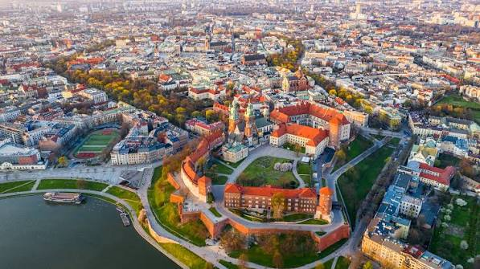
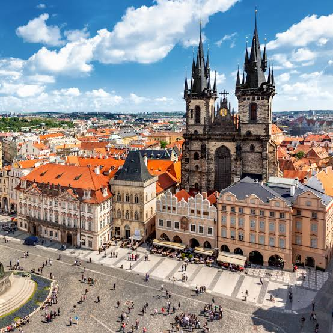

Krakau
Krakau is, na Warschau, de grootste stad van Polen. De stad is te vinden in het centraal zuidelijke deel van het land, niet ver van de grens van de buurlanden Tsjechië en Slowakije. Krakau ligt aan de rivier de Wisla waar het zijn bestaansrecht aan te danken heeft. Krakau is gesticht aan de rivier de Wisla op de Wawelheuvel op een kruispunt van verschillende handelswegen.

Praag
Praag is de prachtige hoofdstad van Tsjechië. Praag ligt midden in de regio Midden-Bohemen, maar vormt een zowel een eigen regio als een eigen district. De geschiedenis van Praag (Praha) gaat duizenden terug, waarbij er al voor het begin van onze jaartelling sprake was van een Keltische nederzetting aan de oevers van de Moldau.

Rome
Rome is de hoofdstad van Italië en de grootste stad van het land. Rome was eveneens de hoofdstad van het Romeinse Keizerrijk. Het historische stadscentrum staat op de Werelderfgoedlijst van de UNESCO